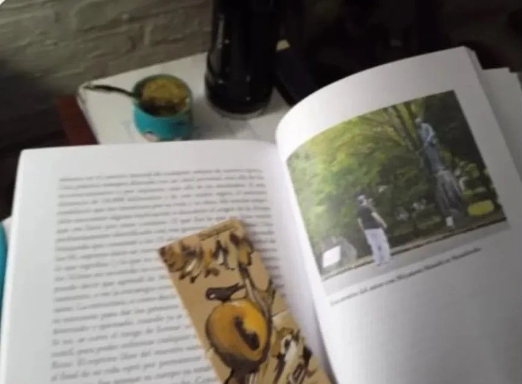
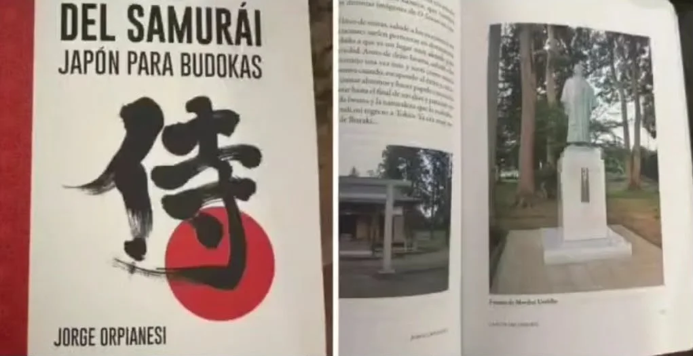
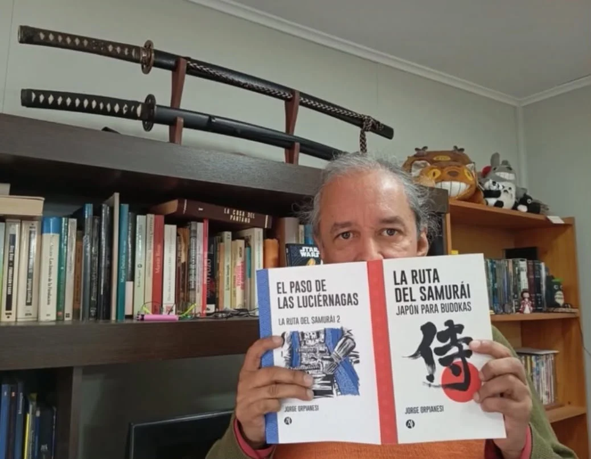
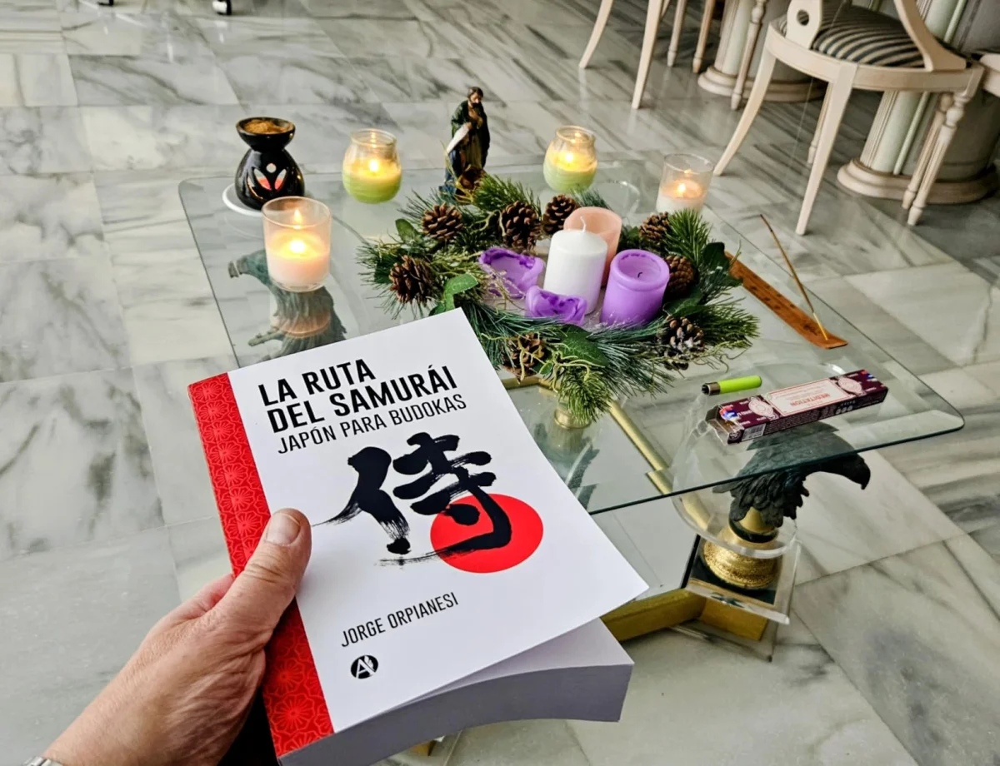
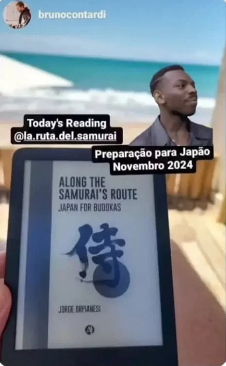
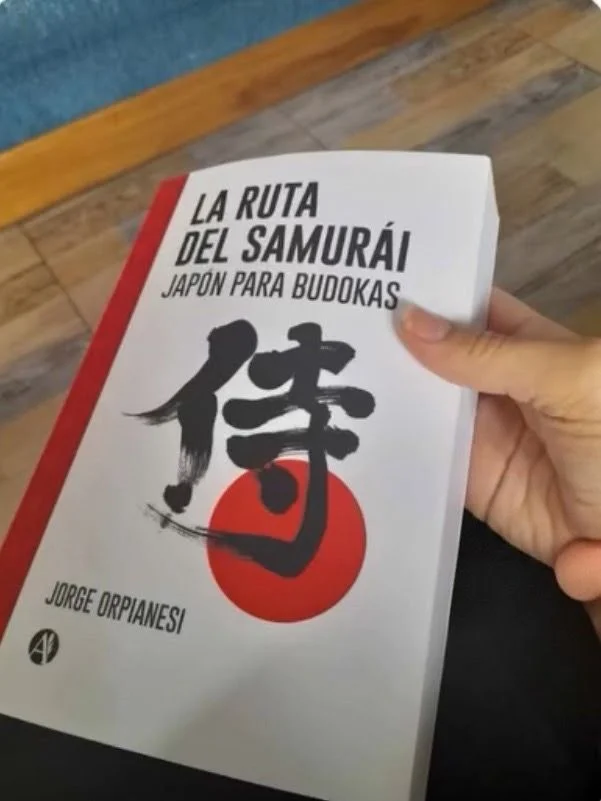
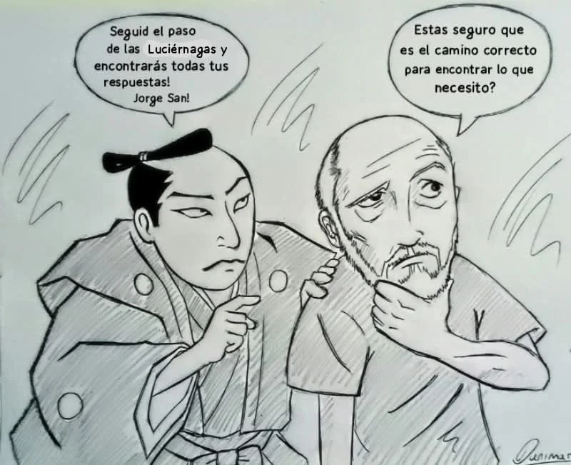
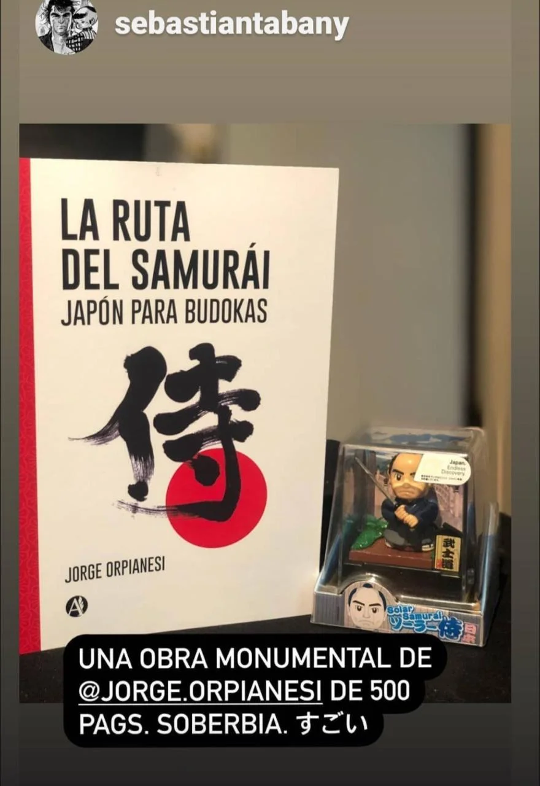

Un recorrido por el Japón de los samuráis a través de los libros y canales de difusión de un estudioso de la cultura y la historia del país del sol naciente
✨ Haz clic en el libro para ampliarlo en detalle · Arrastra para rotar en 3D
LA OBRA LITERARIA
La guía definitiva de Japón para los amantes de la historia samurái.
Una aventura literaria y fotográfica que conecta la historia, las artes marciales, la cultura y la filosofía de Japón a través de entretenidas narrativas de viajes por los lugares icónicos del Japón samurái.
Viaje al Japón profundo
Explora templos y santuarios, antiguos poblados, caminos centenarios, castillos, cementerios, campos de batalla, escuelas samuráis y hasta el sagrado Monte Fuji acompañado de mapas, fotos a color, dibujos y pinturas históricas.
La vida de los grandes samuráis de la historia
Conoce la vida y obra de los grandes nombres de la historia samurái a través de textos antiguos, cartas personales, partes de batalla y de historias reales o noveladas de guerreros de la talla de Miyamoto Musashi, Tokugawa Ieyasu, Toyotomi Hideyoshi, Kato Kiyomasa, Todo Takatora, Honda Tadakatsu, Oda Nobunaga y ¡muchos más!
Cultura y filosofía
Sumérgete en la sociedad japonesa actual a través de sus valores, creencias, costumbres y tradiciones que fueron heredadas de los grandes guerreros samurái que gobernaron el país durante casi ¡siete siglos!
👆 Desliza para salir · Doble toque en el libro para zoom
Testimonios y comunidad
Opiniones de nuestros lectores
Experiencias, valoraciones y fotografías de nuestros seguidores apasionados por la cultura samurái.
“
★★★★★
"Jorge Orpianesi had a very succesful presentation of his new book. It is now available on youtube to watch. I was honored to be asked to write his foreword and contribute to Q&A sectionon sword in the book. (Jorge Orpianesi tuvo una presentación muy exitosa de su nuevo libro. Ya está disponible en Youtube. Fue un honor para mí que me pidiera escribir el prólogo y participar de una seccion de preguntas y respuestas sobre los sables en el libro.)"
✓ Compra Verificada
Jorge Orpianesi had a very succesful presentation of his new book. It is now available on youtube to watch. I was honored to be asked to write his foreword and contribute to Q&A sectionon sword in the book. (Jorge Orpianesi tuvo una presentación muy exitosa de su nuevo libro. Ya está disponible en Youtube. Fue un honor para mí que me pidiera escribir el prólogo y participar de una seccion de preguntas y respuestas sobre los sables en el libro.)
“
★★★★★
"Genial video Jorge! Igual que todos los que publica! yo también me hice de un ejemplar de su libro La Ruta del Samurái, y la verdad es que día a día no dejo de leer cada capítulo y consultarlo a medida que voy siguiendo todos sus documentos y videos por la red. un fuerte abrazo, todos mis respetos con todo el trabajo que está haciendo."
✓ Compra Verificada
Genial video Jorge! Igual que todos los que publica! yo también me hice de un ejemplar de su libro La Ruta del Samurái, y la verdad es que día a día no dejo de leer cada capítulo y consultarlo a medida que voy siguiendo todos sus documentos y videos por la red. un fuerte abrazo, todos mis respetos con todo el trabajo que está haciendo.
“
★★★★★
"Lo felicito. Dueño de una pluma exquisita. Realmente me sentí parte de ese viaje. De hecho leí dos veces su libro. La primera, por más que quería ir despacio me lo devoré en unos días. Me era imposible no seguir leyendo página tras página. En la segunda lectura fue un gustar internamente, componer los lugares, ir viendo tu canal de Youtube, realmente una experiencia que recomiendo para todo budoka."
✓ Compra Verificada
Lo felicito. Dueño de una pluma exquisita. Realmente me sentí parte de ese viaje. De hecho leí dos veces su libro. La primera, por más que quería ir despacio me lo devoré en unos días. Me era imposible no seguir leyendo página tras página. En la segunda lectura fue un gustar internamente, componer los lugares, ir viendo tu canal de Youtube, realmente una experiencia que recomiendo para todo budoka.
“
★★★★★
"Estimado, disfruté mucho de su libro, bien escrito, claro, con mucha información que nos pone a los lectores en contexto. Aclaro que no soy practicnate de artes marciales pero nos acerca a la fascinante cultura nipona. Me gustó mucho la ruta de ese legendario (y desconocido para mí) samurái. Lo felicito, un libro que voy a guardar. un abrazo grande."
✓ Compra Verificada
Estimado, disfruté mucho de su libro, bien escrito, claro, con mucha información que nos pone a los lectores en contexto. Aclaro que no soy practicnate de artes marciales pero nos acerca a la fascinante cultura nipona. Me gustó mucho la ruta de ese legendario (y desconocido para mí) samurái. Lo felicito, un libro que voy a guardar. un abrazo grande.

📸 Foto de Lector
🔍 Clic para ampliar
★★★★★
"Espectacular el libro. Muchas gracias por compartir su recorrido por Japón y la vida del maestro Musashi. Recién lo termino pero voy a volver a leerlo unas cuantas veces. Saludos desde Montevideo, Uruguay!"
Carlos MedinaLector Verificado, Montevideo, Uruguay
Espectacular el libro. Muchas gracias por compartir su recorrido por Japón y la vida del maestro Musashi. Recién lo termino pero voy a volver a leerlo unas cuantas veces. Saludos desde Montevideo, Uruguay!

📸 Foto de Lector
🔍 Clic para ampliar
★★★★★
"Excelente libro!!"
Daniel GachuzLector Verificado
Excelente libro!!
“
★★★★★
"Acabo de comenzar a leer su libro y me ha encantado su formato, la narrativa, los textos que incluye, las fotos y mapas. Excelente trabajo! Saludos desde Mexico!"
✓ Compra Verificada
Acabo de comenzar a leer su libro y me ha encantado su formato, la narrativa, los textos que incluye, las fotos y mapas. Excelente trabajo! Saludos desde Mexico!

📸 Foto de Lector
🔍 Clic para ampliar
★★★★★
"Hoy me llegó La Ruta del samurái 2, aquí junto al primer volumen escritos por Jorge Orpianesi, son sin duda, la mejor y más completa forma de hacer un viaje al Japón de las artes marciales, desde casa. Felicitaciones al autor por hacernos parte de sus viajes e investigaciones por el país del Budo."
Aldo CorralesMaestro de Aikido, Osorno, Chile
Hoy me llegó La Ruta del samurái 2, aquí junto al primer volumen escritos por Jorge Orpianesi, son sin duda, la mejor y más completa forma de hacer un viaje al Japón de las artes marciales, desde casa. Felicitaciones al autor por hacernos parte de sus viajes e investigaciones por el país del Budo.
“
★★★★★
"Voy por la mitad del libro Jorge...fue el dinero mejor invertido definitivamente. Me hubiese gustado tenerlo antes d emi viaje a Japón, pero ahora me ayudó a comprender sobre muchos lugares que visité sin saber toda esa historia que hay en ellos. Para mi próxima visita ya tengo en cuenta muchas cosas...la lista va aumentando a medida que leo tu libro."
✓ Compra Verificada
Voy por la mitad del libro Jorge...fue el dinero mejor invertido definitivamente. Me hubiese gustado tenerlo antes d emi viaje a Japón, pero ahora me ayudó a comprender sobre muchos lugares que visité sin saber toda esa historia que hay en ellos. Para mi próxima visita ya tengo en cuenta muchas cosas...la lista va aumentando a medida que leo tu libro.
“
★★★★★
"Maravilloso! Gracias Jorge, he aprendido demasiado, y eso que soy historiadora pero los detalles, la claridad y la veracidad de la información es sorprendente. Gracias por compartir tan sublime experiencia. Seguiremos "encontrádonos en el camino"."
✓ Compra Verificada
Maravilloso! Gracias Jorge, he aprendido demasiado, y eso que soy historiadora pero los detalles, la claridad y la veracidad de la información es sorprendente. Gracias por compartir tan sublime experiencia. Seguiremos "encontrádonos en el camino".
“
★★★★★
"El autor hace un trabajo genial. Deseoso de leer todo lo que escribe."
✓ Compra Verificada
El autor hace un trabajo genial. Deseoso de leer todo lo que escribe.
“
★★★★★
"Imprescindible para amantes de Japón, de la Historia, del mundo samurai, y/o de practicantes de Artes Marciales."
✓ Compra Verificada
Imprescindible para amantes de Japón, de la Historia, del mundo samurai, y/o de practicantes de Artes Marciales.
“
★★★★★
"Interesante. Está muy padre el libro te ayuda an elegies puntos de interes para tu viaje. Te transporta a las eras y enter un poco más de la cultura."
✓ Compra Verificada
Interesante. Está muy padre el libro te ayuda an elegies puntos de interes para tu viaje. Te transporta a las eras y enter un poco más de la cultura.
“
★★★★★
"Libro guía para reconocer en el japón actual alantiguo. Muy buen libro para quién es gustan de las artes marciales japonesas. Bien explicado con lenguaje adecuado para cualquier lector"
✓ Compra Verificada
Libro guía para reconocer en el japón actual alantiguo. Muy buen libro para quién es gustan de las artes marciales japonesas. Bien explicado con lenguaje adecuado para cualquier lector

📸 Foto de Lector
🔍 Clic para ampliar
★★★★★
"Impresionante, fascinante obra. Te sumerge en el mundo de los samuráis, su historia y tradiciones. Muy recomendable."
Carlos Cortes OteroLector Amazon, España
Impresionante, fascinante obra. Te sumerge en el mundo de los samuráis, su historia y tradiciones. Muy recomendable.

📸 Foto de Lector
🔍 Clic para ampliar
★★★★★
"Domo arigatou for the sharing support! Great book, amazing reading! i am loving it the first chapter Tokyo and Ueno park!. (¡Muchas gracias por compartirlo! Es un libro estupendo, ¡una lectura fantástica! Me está encantando el primer capítulo sobre Tokio y el parque de Ueno.)"
Bruno ContardiMaestro de iaido, Brasil
Domo arigatou for the sharing support! Great book, amazing reading! i am loving it the first chapter Tokyo and Ueno park!. (¡Muchas gracias por compartirlo! Es un libro estupendo, ¡una lectura fantástica! Me está encantando el primer capítulo sobre Tokio y el parque de Ueno.)
“
★★★★★
"No dejen de leer La Ruta del Samurái que es la única y mejor fuente en nuestro idioma y está enlazado con los mejores de Japón."
✓ Compra Verificada
No dejen de leer La Ruta del Samurái que es la única y mejor fuente en nuestro idioma y está enlazado con los mejores de Japón.
“
★★★★★
"Excelente libro! Lo empecé a leer hace unos días y no te suelta! Te traslada a otros lugares y tiempos, uno se imagina en el campo de batalla!"
✓ Compra Verificada
Excelente libro! Lo empecé a leer hace unos días y no te suelta! Te traslada a otros lugares y tiempos, uno se imagina en el campo de batalla!
“
★★★★★
"Cómo disfruté de este libro (La Ruta del samurái)! y no solo eso sino que me servirá de guía práctica para cuando pueda cumplir mi sueño de viajar a Japón. Gracias maestro por ese gran libro. Esperando ansioso el siguiente!"
✓ Compra Verificada
Cómo disfruté de este libro (La Ruta del samurái)! y no solo eso sino que me servirá de guía práctica para cuando pueda cumplir mi sueño de viajar a Japón. Gracias maestro por ese gran libro. Esperando ansioso el siguiente!
“
★★★★★
"Jorge, me encuentro leyendo tu libro y siguiendo tus aportes en redes sociales y es simplemente alucinante, es viajar mientras se lee. Saludos desde el otro lado de la cordillera, un kendoka amigo!"
✓ Compra Verificada
Jorge, me encuentro leyendo tu libro y siguiendo tus aportes en redes sociales y es simplemente alucinante, es viajar mientras se lee. Saludos desde el otro lado de la cordillera, un kendoka amigo!
“
★★★★★
"Estoy armando mi primer viaje a Japón y tus videos me han ayudado muchísimo. Tu libro también. Ojalá puedas escribir otro pronto. Gracias por compartir tu sabiduría con todos nosotros."
✓ Compra Verificada
Estoy armando mi primer viaje a Japón y tus videos me han ayudado muchísimo. Tu libro también. Ojalá puedas escribir otro pronto. Gracias por compartir tu sabiduría con todos nosotros.
“
★★★★★
"Estoy leyendo La Ruta del Samurái y me está encantando! Busco cada lugar con Google Maps para ver lo en más detalle aun y estoy aprendiendo un montón sobre historia y cultura japonesa. Tengo esperando para cuando lo termiine a El Paso de las Luciérnagas. Gracias por sus obras para los amantes de aquella época!"
✓ Compra Verificada
Estoy leyendo La Ruta del Samurái y me está encantando! Busco cada lugar con Google Maps para ver lo en más detalle aun y estoy aprendiendo un montón sobre historia y cultura japonesa. Tengo esperando para cuando lo termiine a El Paso de las Luciérnagas. Gracias por sus obras para los amantes de aquella época!
“
★★★★★
"This is a great bookfor those who to learn more about the samurai culture, both knowing nothing about it or being experts. I highly recomend it! (Este es un libro excelente para quienes deseen aprender más sobre la cultura samurái, tanto si no saben nada al respecto como si son expertos. ¡Lo recomiendo encarecidamente!)"
✓ Compra Verificada
This is a great bookfor those who to learn more about the samurai culture, both knowing nothing about it or being experts. I highly recomend it! (Este es un libro excelente para quienes deseen aprender más sobre la cultura samurái, tanto si no saben nada al respecto como si son expertos. ¡Lo recomiendo encarecidamente!)
“
★★★★★
"Un libro imperdible. Tanto para los amantes de japón y las artes marciales como para quienes no conocen tanto del tema, pero quieren aprender. Tuve el privilegio de leerlo en español y traducirlo al inglés, y disfruté cada momento y cada página. Los relatos del autor transportan a los lectores a tierras y épocas lejanas y, al leerlo, me sentí como si estuviera viajando con él por Japón."
✓ Compra Verificada
Un libro imperdible. Tanto para los amantes de japón y las artes marciales como para quienes no conocen tanto del tema, pero quieren aprender. Tuve el privilegio de leerlo en español y traducirlo al inglés, y disfruté cada momento y cada página. Los relatos del autor transportan a los lectores a tierras y épocas lejanas y, al leerlo, me sentí como si estuviera viajando con él por Japón.
“
★★★★★
"A great companion book for any budoka travelling to Japan and Okinawa. I really enjoyed this book at is has a lot of titbitson sights and places in Japan and Okinawa significant to those that are into the story of samurai, Miyamoto Musashi and martial arts buffs in general. Some of the mentions brought back memories whiles other peake my interest for mi next trip to Japan and Okinawa. I wish there were more pictures. Great Book!
(Un libro excelente para cualquier budoka que viaje a Japón y Okinawa. Disfruté mucho de esta obra, ya que ofrece numerosos datos curiosos sobre lugares y sitios de interés —tanto en Japón como en Okinawa— que resultan significativos para los aficionados a la historia de los samuráis y de Miyamoto Musashi, así como para los entusiastas de las artes marciales en general. Algunas de las referencias me trajeron recuerdos, mientras que otras despertaron mi interés para mi próximo viaje a la región. Ojalá hubiera incluido más fotografías. ¡Un libro fantástico!)"
✓ Compra Verificada
A great companion book for any budoka travelling to Japan and Okinawa. I really enjoyed this book at is has a lot of titbitson sights and places in Japan and Okinawa significant to those that are into the story of samurai, Miyamoto Musashi and martial arts buffs in general. Some of the mentions brought back memories whiles other peake my interest for mi next trip to Japan and Okinawa. I wish there were more pictures. Great Book!
(Un libro excelente para cualquier budoka que viaje a Japón y Okinawa. Disfruté mucho de esta obra, ya que ofrece numerosos datos curiosos sobre lugares y sitios de interés —tanto en Japón como en Okinawa— que resultan significativos para los aficionados a la historia de los samuráis y de Miyamoto Musashi, así como para los entusiastas de las artes marciales en general. Algunas de las referencias me trajeron recuerdos, mientras que otras despertaron mi interés para mi próximo viaje a la región. Ojalá hubiera incluido más fotografías. ¡Un libro fantástico!)

📸 Foto de Lector
🔍 Clic para ampliar
★★★★★
"Que gran libro! Estoy esperando que el segundo se encuentre disponible en mi país. Felicitaciones Sensei! Lo leí en menos de un día y es toda una joya de conocimiento. Abrazos desde Colombia!"
Giselle GaitánSeguidor, Colombia
Que gran libro! Estoy esperando que el segundo se encuentre disponible en mi país. Felicitaciones Sensei! Lo leí en menos de un día y es toda una joya de conocimiento. Abrazos desde Colombia!

📸 Foto de Lector
🔍 Clic para ampliar
★★★★★
"Quiero regalarte este dibujo por compratir tus anécdotas y travesías que nos enseñan sobre la cultura japonesa, en especial sobre los samuráis. Gracias por su interés en compartirnos y lo que hay en Japón y sus misterios."
Daniel Kendo ComicsDibujante, Colombia
Quiero regalarte este dibujo por compratir tus anécdotas y travesías que nos enseñan sobre la cultura japonesa, en especial sobre los samuráis. Gracias por su interés en compartirnos y lo que hay en Japón y sus misterios.

📸 Foto de Lector
🔍 Clic para ampliar
★★★★★
"Una obra monumental de Jorge Orpianesi de 500 páginas! Soberbia!"
Sebastián TabanyCrítico de cine, Capital federal, Argentina
Una obra monumental de Jorge Orpianesi de 500 páginas! Soberbia!
“
★★★★★
"Quiero expresar mi agradecimiento por compartir tan maravillosamente la ruta del samurái. Respondió muchas preguntas que me habían quedado en el tintero y que no le pude preguntar a mi sensei."
✓ Compra Verificada
Quiero expresar mi agradecimiento por compartir tan maravillosamente la ruta del samurái. Respondió muchas preguntas que me habían quedado en el tintero y que no le pude preguntar a mi sensei.
“
★★★★★
"Me encantan sus videos , me hacen reflexionar y me transmiten mucha paz."
✓ Compra Verificada
Me encantan sus videos , me hacen reflexionar y me transmiten mucha paz.
“
★★★★★
"Me encantó! Todo! De hecho lo voy a extrañar! Me gustó eso que dice el autor al final de que si te dieron ganas de visitar Japón había cumplido su objetivo y es así totalmente!
Musashi un crack y el capítulo de Okinawa me gustó mucho."
✓ Compra Verificada
Me encantó! Todo! De hecho lo voy a extrañar! Me gustó eso que dice el autor al final de que si te dieron ganas de visitar Japón había cumplido su objetivo y es así totalmente!
Musashi un crack y el capítulo de Okinawa me gustó mucho.
“
★★★★★
"Disfruté cada página. Este libro de nuestro amigo samurái de Argentina es lo más respetuoso y detallado que he visto en mi larga vida de 48 años practicando artes marciales acerca de la historia de Japón en los tiempos de las era Sengoku, Edo y Meiji"
✓ Compra Verificada
Disfruté cada página. Este libro de nuestro amigo samurái de Argentina es lo más respetuoso y detallado que he visto en mi larga vida de 48 años practicando artes marciales acerca de la historia de Japón en los tiempos de las era Sengoku, Edo y Meiji
“
★★★★★
"Excelente libro para los amantes de la vida de los samuráis!"
✓ Compra Verificada
Excelente libro para los amantes de la vida de los samuráis!
¿Ya leíste el libro o recibiste tu ejemplar?
Envíanos tu foto o testimonio para publicarlo en la web oficial y redes sociales.
Sigue La Ruta del Samurái a través de nuestras redes
Acompáñanos en nuestras publicaciones sobre historia y cultura japonesa, con videos y miles de fotografías que harán de tus libros una verdadera experiencia interactiva.
Libros excepcionales que plasman los viajes del autor por todo el territorio japonés en busca de aquellos lugares donde se sucedieron los hechos históricos.
1
La Ruta del Samurái
Un recorrido geográfico por los lugares más famosos relacionados con los samuráis siguiendo los pasos del famoso duelista Miyamoto Musashi mientras el lector descubre las maravillas de Japón.
2
El Paso de las Luciérnagas
La segunda expedición del autor por tierras japonesas buscando los antiguos caminos que recorrían los samuráis durante el período Edo. Jorge Orpianesi emula los recorridos hechos por el artista Utagawa Hiroshige en el siglo XIX a través de la ruta Tokaido uniendo la antigua Edo con Kioto y el regreso por la ruta Nakasendo mientras hace una comparativa entre las imágenes que va tomando en su camino con las pinturas que realizó Hiroshige en la época de los samuráis.
3
Along the Samurai´s Route
A geographical journey through the most famous places related to the samurai, following in the footsteps of the famous duelist Miyamoto Musashi, while the reader discovers the wonders of Japan.
ELIGE TU FORMATO
Ediciones Disponibles
AMAZON GLOBAL
Desde el exterior
Todos los títulos – Envíos internacionales
INTERNACIONAL
Disponible en formatos e-book Kindle para descarga inmediata
Edicion impresa en tapa blanda
Envíos a todo el mundo con la garantía de Amazon
Acceso completo a los mapas, fotografías y dibujos de todas las obras
Nacido en 1969 en la ciudad de Córdoba, en la República Argentina Jorge Orpianesi practica Karate Do desde 1982, Kobudo okinawense desde 1986, Aikido desde 1997 y Iaido desde 2008. Es un estudioso de todas las artes marciales japonesas y de las filosofías en las que se encuentran arraigadas. Participó de numerosos congresos y seminarios de las más variadas disciplinas de combate. En el año 2013 asistió al Primer Seminario Mundial de Karate y Kobudo Tradicional que se llevó a cabo en la isla de Okinawa (Japón) donde tuvo oportunidad de recibir enseñanzas de los más grandes maestros del mundo. Su carrera como competidor se desarrolló entre 1988 y 1996. Fue capitán de equipo de kata y se desempeñó como juez y árbitro en Karate deportivo. Comenzó su actividad docente en 1989 y al día de hoy sigue brindando sus enseñanzas a través de seminarios y distintos medios de difusión. Durante 1991 y 1992 tuvo su propio micro radial y más acá en el tiempo se convirtió en columnista de renombradas revistas internacionales como Bugeisha (USA) y Ganbatte (México) así como también de sitios de cultura asiática como por ejemplo Reporte Asia que brinda nexos comerciales y culturales entre los países del lejano oriente y Latinoamérica. En 2021 escribió su primer libro llamado “La Ruta del Samurái, Japón para Budokas” que fue un éxito en todos los países de habla hispana. Al año siguiente se editó la versión en inglés y en 2025 salió su segundo trabajo llamado “El paso de las Luciérnagas, La Ruta del Samurái 2”. En ambas obras el autor relata sus experiencias vividas durante sus viajes por todo Japón. Viajes que seguirán brindando material para futuros libros…